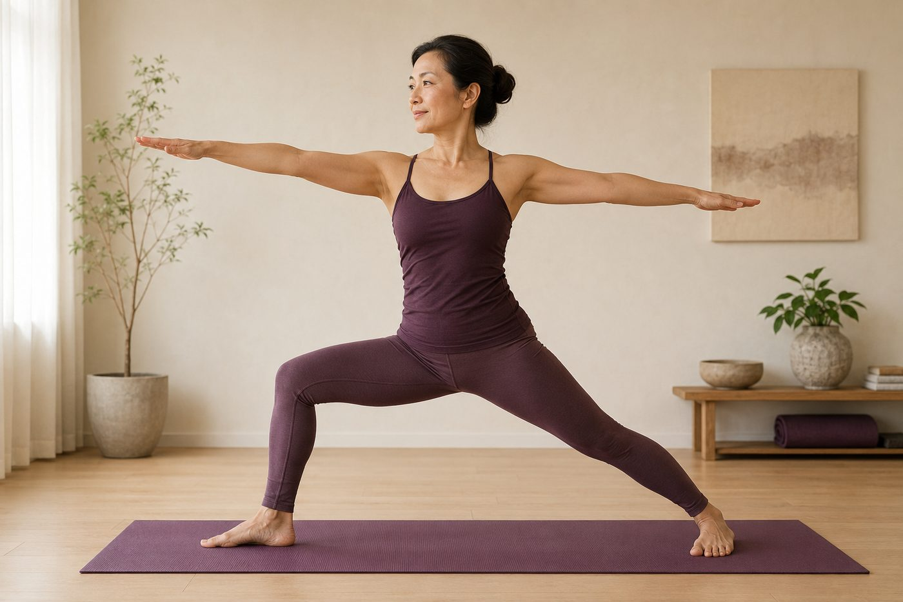

瑜伽課膝蓋不舒服，跪姿或屈膝動作怎麼退階？

課上要從跪姿換到弓步，你的膝蓋一碰墊就不太舒服。旁邊的人已經做完，你幾乎想先忍著跟上。
瑜伽課膝蓋不舒服，可先停下當前動作，再請老師調整接觸面、支點或屈膝幅度。跪姿加墊會改變膝與地面的接觸，站姿扶穩或減少蹲深也會改變承重方式。調整後仍痛就先退出動作。若膝蓋卡住、不能負重或明顯腫脹，請暫停練習並尋求醫療評估。
跪姿或站姿屈膝時，怎麼請老師幫忙調整？
先說清楚是在膝碰到墊子時不舒服，還是屈膝承重時才出現。老師可依情況改用摺疊墊、牆面支點或站姿版本。若主要困擾發生在平常下樓梯，膝髖連動篇專門說明那個情境。
👆 手機版可左右滑動
| 課堂情境 | 可與老師討論的退階 | 什麼時候退出 |
|---|---|---|
| 跪姿碰地不舒服 | 加摺墊或改用站姿版本。 | 改支撐後仍不舒服。 |
| 屈膝站姿越做越痛 | 扶穩牆面或縮小幅度。 | 疼痛加劇時停止。 |
| 盤腿膝內側緊或腳麻 | 鬆開雙腿，換椅坐或用可支撐的坐姿。 | 出現刺痛或麻木時先換位。 |
深蹲或盤腿不舒服，可以換哪個動作？
不必等同學做完才退出。即使只是想試小幅度深蹲，若腳跟抬起，可以先了解深蹲活動度的觀察方式；若主要感受是盤腿腳麻，可先換坐法，別留在讓腳發麻的姿勢。
常見問題
聽見膝蓋喀一聲，需要繼續做嗎？
聲音本身不能判定傷勢。若伴隨疼痛、卡住、不穩或腫脹，先停練並尋求評估。
膝蓋不舒服，一定要用護膝嗎？
可以先退出動作，再和老師討論支點、幅度或替代做法。若持續不適，先尋求評估。
先記下最有感的日常時刻
只想整理課堂中哪些動作需要額外支點，可以先記下一個情境。
約 2 分鐘，免登入、免加 LINE。做完可用 3 天觀察卡整理日常感受。
開始免費 2 分鐘體態訊號掃描 →延伸閱讀 下樓也會卡？看下階時的膝髖踝觀察